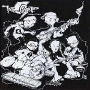

|
|

EXPANDINDO A
DIVERSIDADE EUFÓRICA |
O
EP está previsto para ser lançado em
abril.
_1-Juras
_2-Em Todas as Redes
_3-Perto do Longe
_4-Espirito de Porco
_5-Atirador de Elite
_6-Navalha
___[Monólogo]
|
|

CONTRATAQUE SONORO
|
Lançado
em março de 2003, o cd possui sete faixas gravadas
ao vivo em estudio, e três vinhetas eletrônicas.
Nesta época a banda tinha apenas cinco integrantes,
sendo que o Magoo tinha entrado na banda à apenas
um mês.
1- Entrando
2-Contrataque Sonoro
3-Ataback's
4-Foras da Lei
5-Promessas
|
-6-Em Manifesto
-7-Encosta
-8-Correndo Atrás
-9-Revolt's
10-América do Sul
|
|
|
Em 2002 foi lançada a primeira
Demo da banda com três músicas: Falo Falo e Falo,
Deixa Entrar e Trilha do Futuro, esta última cover
do Pavilhão 9, nunca foi criada uma capa para este
CD. |
|